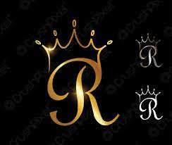

<link rel="stylesheet" href="about.css">
<article class="about active" data-page="about">
    <header>
        <h2 class="h2 article-title">Dedication</h2>
    </header>
    <div>
        
    </div>

    <section class="about-text">
        <p>I want to express my deepest gratitude to my uncle AKOCHI PATRICK for</p>
        <p>being such incredible source of support and guidance.</p>
        <p>Your presence in my life has made a siginificant difference,</p>
        <p>and i am honored to call you my big uncle.</p>
        <p>Thank you for being there for me, beliving in me and for helping become the person i am today</p>
    </section>
    <script src="about.js"></script>

    <style>
        img{
            border-radius: 30%;
        }
    </style>